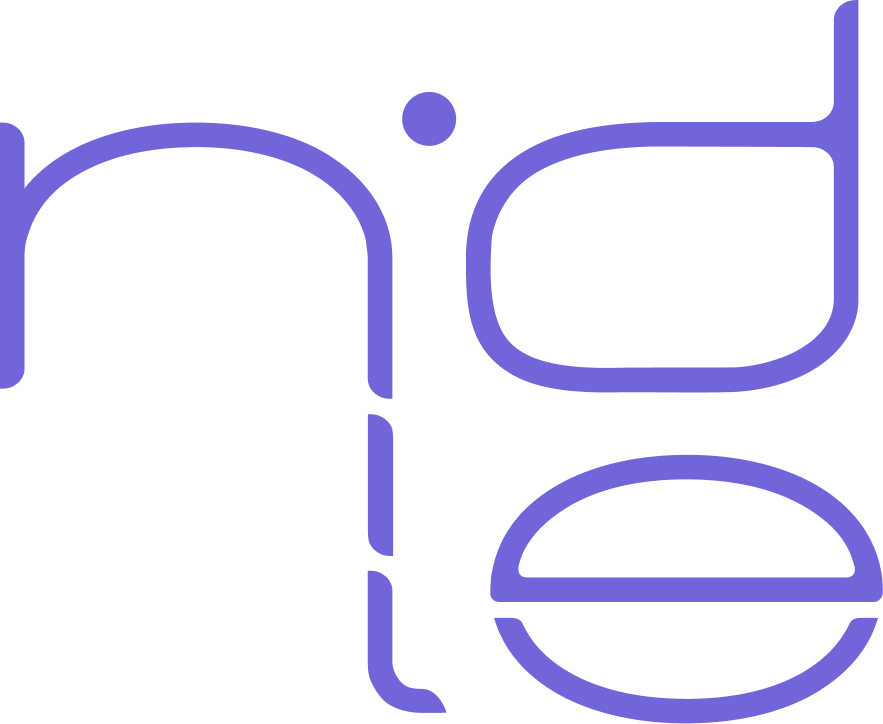

Collaborations - Small Talk
Nidle already had a few opportunities, and missed none of them. Collaborating with artists and other brands, Nidle's vision does not stop here. The perfect word to describe what Nidle does is "individual".
Individual pieces (Nidle only creates limited edition products that you may never see again), individual characters (Nidle focuses on the personality and perspective of the artist or the collaborator), individual work (Nidle means me, and I mean Nidle. We are one and the same, the only difference is the perspective).